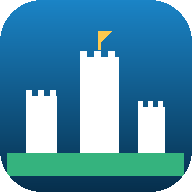

Il fantacalcio gratuito del Campionato Sammarinese.I voti nascono dai referti delle partite.
Dal 1° dicembre sui tuoi dispositivi: il fanta del futsal sammarinese, nella stessa app e con lo stesso account. Fatti trovare già dentro.